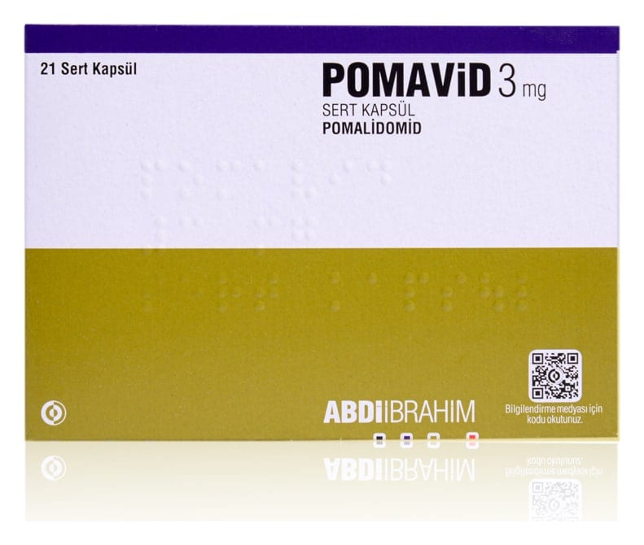

Pomavid 3 mg Sert Kapsül (21 adet)

Ne için kullanılır
KT · Bölüm 1POMAVİD 3 mg sert kapsül, opak koyu mavi kapak ve açık yeşil opak gövdeli 2 numara kapsül içinde sarı ya da sarımsı, homojen, yabancı partikül içermeyen tozdur. Her kutuda 21 sert kapsül vardır.
POMAVİD, pomalidomid isimli etkin maddeyi içerir. Bu ilaç talidomid’e [bağışıklık sistemini baskılayan (immunosupresif) ilaç] benzer ve bağışıklık sisteminin (vücudun doğal savunma sistemi) fonksiyonlarını değiştirebilen ya da düzenleyebilen immünomodülatörler olarak isimlendirilen bir grup ilaç sınıfındandır.
POMAVİD, yetişkinlerde “multipl miyelom” isimli bir kanser türünü tedavi etmek için kullanılır. Bu ilacı kullanmaya başlamadan önce bu KULLANMA TALİMATINI dikkatlice okuyunuz, çünkü sizin için önemli bilgiler içermektedir. • Bu kullanma talimatını saklayınız. Daha sonra tekrar okumaya ihtiyaç duyabilirsiniz. • Eğer ilave sorularınız olursa, lütfen doktorunuza ya da eczacınıza danışınız. • Bu ilaç kişisel olarak sizin için reçete edilmiştir, başkalarına vermeyiniz. • Bu ilacın kullanımı sırasında, doktora veya hastaneye gittiğinizde bu ilacı kullandığınızı doktorunuza söyleyiniz. • Bu talimatta yazılanlara aynen uyunuz. İlaç hakkında size önerilen dozun dışında yüksek veya düşük doz kullanmayınız.
POMAVİD aşağıdaki her iki durum için kullanılır; 1. POMAVİD, bortezomib (bir çeşit kemoterapi ilacı) ve deksametazon (bir iltihap giderici) isimli ilaçlarla birlikte aşağıda belirtilen koşulları taşıyan yetişkinleri tedavi etmek için kullanılır. • Daha önce lenalidomid (multipl miyelom tedavisinde kullanılan diğer ilaç) dahil en az bir tedavi almış, bu tedavilere dirençli veya hastalığı tedavi sonrası tekrarlayan hastaların tedavisinde kullanılır.
2. POMAVİD, deksametazon isimli diğer bir ilaçla birlikte ve aşağıda belirtilen koşulları taşıyan yetişkinleri tedavi etmek için kullanılır: • Kendi kök hücrelerinin nakline uygun olmayan hastalarda bortezomib ve lenalidomid (multipl miyelom tedavisinde kullanılan diğer ilaçlar) dahil en az iki tedavi sonrası tekrar eden veya bu tedavilere dirençli hastalık varlığında kullanılır. • Kendi kök hücrelerinin nakline uygun hastalarda bortezomib, lenalidomid ve kendi kök hücre nakli destekli yüksek doz kemoterapi dahil en az iki tedavi sonrası tekrar eden veya bu tedavilere dirençli hastalık varlığında kullanılır.
Multipl miyelom, belirli bir beyaz kan hücresi (plazma hücresi olarak isimlendirilen) tipini etkileyen bir kanser türüdür. Bu hücreler kontrolsüz şekilde çoğalarak kemik iliğinde birikirler. Bu durum, kemikler ve böbreklerde hasara yol açar.
Multipl miyelom genellikle tedavi edilememektedir. Bununla birlikte, belirti ve bulgular büyük ölçüde azaltılabilmekte veya belirli bir süre boyunca ortadan kaldırılabilmektedir. Bu durum gerçekleştiğinde, buna ‘yanıt’ adı verilir.
POMAVİD bir dizi farklı yollar ile etkisini gösterir: • miyelom hücrelerinin büyümesini durdurarak • kanser hücrelerine saldırması için bağışıklık sistemini uyararak • kanser hücrelerini besleyen kan damarlarının oluşmasını durdurarak
POMAVİD’i bortezomib ve deksametazon ile kullanmanın faydası POMAVİD, bortezomib ve deksametazon ile birlikte kullanıldığında en az bir başka tedavi almış hastalarda, multipl miyelomun kötüleşmesini durdurabilir. • POMAVİD bortezomib ve deksametazon ile birlikte kullanıldığında multipl miyelomun tekrar görülmesini ortalama olarak 11 aya kadar durdururken, yalnızca bortezomib ve deksametazon kullanan hastalarda bu süre 7 aydır.
POMAVİD’i deksametazon ile kullanmanın faydası POMAVİD deksametazon ile birlikte kullanıldığında, en az üç başka tedavi almış hastalarda, multipl miyelomun kötüleşmesini durdurabilir: • POMAVİD deksametazon ile birlikte kullanıldığında multipl miyelomun tekrar görülmesini ortalama olarak 4 aya kadar durdururken, yalnızca deksametazon kullanan hastalarda bu süre 2 aydır.